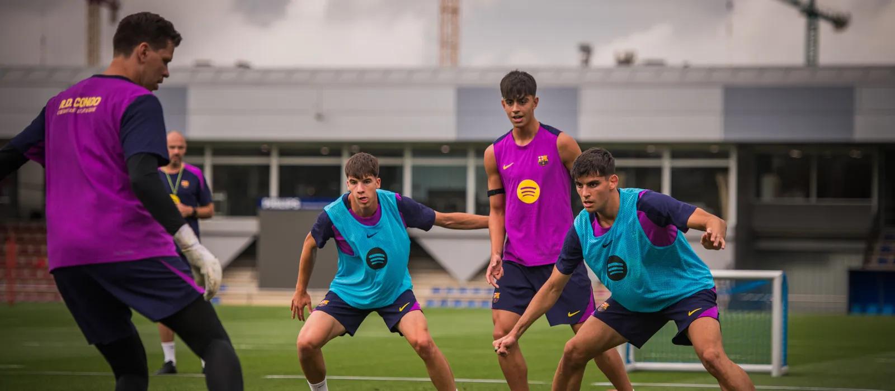
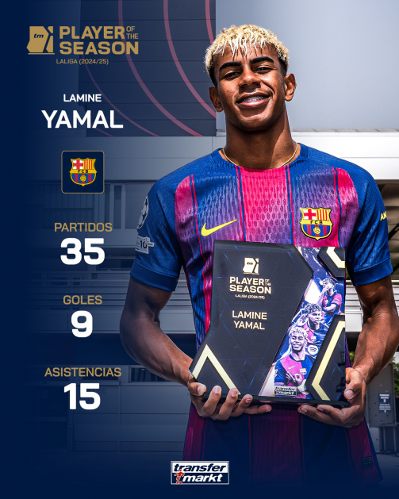

A Season of Goals
Relive the entire 25/26 campaign through its best moments. Creativity, precision, and classic Barça football.
Transfer & Injury Updates
Stay informed on squad changes and player recoveries. Official news on transfers, negotiations, injuries, and return timelines.
Day One: Anthony Gordon
Arrival. Signing. Photoshoot. Gordon’s first day as a Blaugrana begins here.

Preseason to start on July 13
FC Barcelona will begin preparations for the 2026/27 season on July 13 at the Ciutat Esportiva, with players reporting for medical checks and fitness assessments before returning to training.
Hansi Flick’s side will continue work at the club’s training facilities before travelling to England for a pre-season stage at St. George’s Park from July 27 to August 3.
The renowned training complex, a regular base for the England national team, has previously hosted Barça during past pre-season tours in 2014 and 2016.

Joan Garcia with best LaLiga save
Joan Garcia has been awarded the LaLiga EA Sports Save of the Season for the 2025/26 campaign.
The FC Barcelona goalkeeper produced a decisive moment in the match against RCD Espanyol on matchday 18 at the RCDE Stadium. With the score at 0–0 in the 38th minute, Garcia reacted brilliantly to deny Pere Milla from close range, producing a spectacular one-handed save to keep the ball out and maintain a clean sheet for the Blaugrana. His performance helped secure an important victory in the derby and highlighted his consistency throughout the season.
This award, alongside the Zamora Trophy after conceding just 21 goals, caps off an outstanding first season for Joan Garcia at FC Barcelona.

Lamine Yamal, LaLiga player of the season
Another award for the brilliant Lamine Yamal.
The La Masia graduate was named the 2025/26 LaLiga Player of the Season after playing a key role in Barça's title-winning campaign. The young Catalan dazzled supporters throughout the season with his dribbling, creativity, and ability to deliver in the biggest moments.
The Blaugrana number 10 finished the league season with 16 goals and 11 assists, more than any other player in LaLiga. It was also his highest-scoring campaign to date, earning him a share of the Zarra Trophy alongside Ferran Torres.
His contributions were crucial in helping the Blaugrana lift the league title and continue their dominance of Spanish football.

Building the Future
The transformation of Spotify Camp Nou represents one of the most ambitious projects in the club's history.
The redevelopment will create a modern stadium experience while preserving the identity and traditions of FC Barcelona.
Once completed, the new home of the Blaugrana will provide world-class facilities for players and supporters, helping the club continue to grow both on and off the pitch.